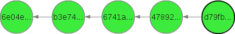
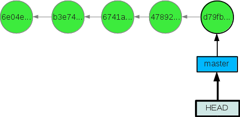
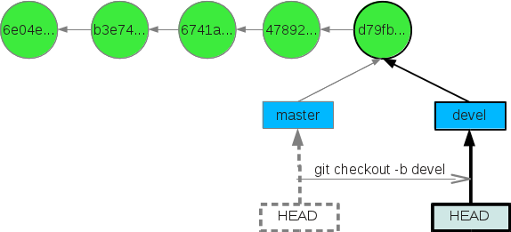
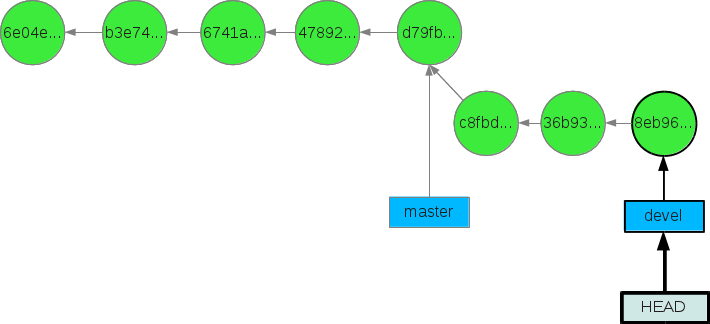
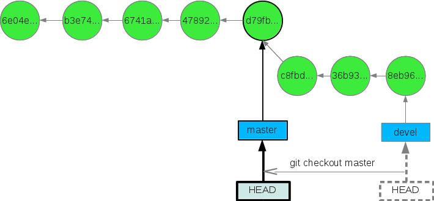
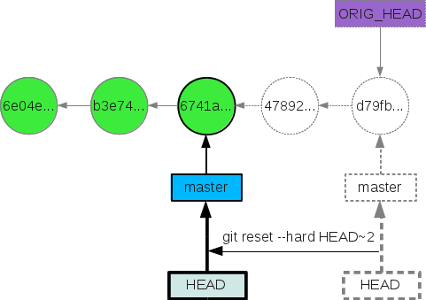
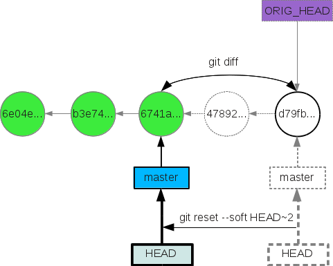
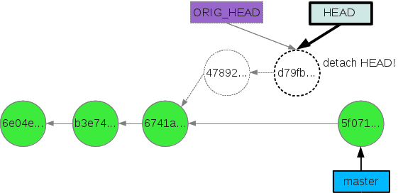

Машина времени в GIT
В последнее время мои коллеги начинают знакомство с git'ом. И один из интересующих их вопросов — как откатиться до определённой ревизии. В интернете можно найти набор команд, но хочется, чтобы было понимание каждой из них. Баловство с комадами git'а без понимания может привести к потере истории разработки.
В этой статье я хочу рассказать о командах git checkout и git reset с ключами --soft и --hard.
Итак, начнём краткий ликбез по машине времени, предоставляемой git'ом. Сперва проиллюстрируем историю:

Здесь кружочками обозначены коммиты. Чем правее коммит, тем он новее. Коммит с хэшем 6e04e..-это самый первый коммит. Одно из основных понятий, которое стоит уяснить себе новичку, — это указатели на коммиты, а точнее некоторое «прозвище» того или иного коммита. Их тьма тьмущая, например: HEAD, master, FETCH_HEAD, ORIG_HEAD и т.д. Это я перечислил крупицу стандартных прозвищ. Их можно создавать и самим, но об этом впереди.
Заострим наше внимание на двух указателях: master и HEAD.
master указывает на самый старший коммит в ветке под названием master (эта ветка создаётся при инициализации репозитория). HEAD указывает на указатель master (читай, текущее состояние файлов). После появления первого коммита в репозитории, HEAD и master указывают на один и тот же коммит. И так будет продолжать до тех пор, пока не переключимся на другую ветку, не откатимся по истории, либо не совершим ряд необдуманных действий. Итак, проиллюстрируем нашу историю с указателями:

Указатель HEAD в нашем случае указывает на master, а master — на коммит d79fb… Архиважно понять, что текущее состояние неизменённых файлов, находящихся под контролем версий, есть тот коммит, на который указывает HEAD. То есть, если HEAD будет указывать на коммит с хэшем 6e04e.., то файлы окажутся в первоначальном своём состоянии. Для «движения» указателя HEAD существует команда: git checkout . Те, кто знаком хоть чуть-чуть с git'ом, узнали в этой команде переключение на другую ветку. Всё совершенно верно — при переключении на другую ветку мы просто переносим указатель HEAD на последний коммит ветки.
Перенос указателя HEAD (git checkout)
Откат по истории коммитов:
После завершения операции checkout мы будем находится в состоянии, в котором были два коммита назад. Это всё прекрасно — мы сделали шажок в прошлое, что-то там подглядели, но как вернуться назад? Я вот, например, не обладаю сверхпамятью, и не помню хэш самого последнего коммита (тот, который самый правый — d79fb..). Если написать git log, то увидим историю, состоящую из трёх коммитов:
[user@localhost project]$ git log --pretty=oneline
6741a69bd121c295413be95d7597cd7409e713a0 add unit test
b3e74f50c3cc48e6b335014b6dc7e301b382a903 add readme
6e04e39d0952a2d6022502d56aaa05d5a064bea Initial commit
Неужели мы потеряли всю историю? Как узнать самый «новый» коммит? Это не проблема — есть выход, и их несколько:
1. Написать команду git log --all. Данная команда напечатает нам всю историю, вплоть до современности, т.е. в нашем случае историю из пяти коммитов:
[user@localhost project]$ git log --pretty=oneline --all
d79fb5688af71b4577f450919535e7177e9d74e8 fix bug
478927e3a088d3cec489ca8810eaaca97c6ce0ff documentation
6741a69bd121c295413be95d7597cd7409e713a0 add unit test
b3e74f50c3cc48e6b335014b6dc7e301b382a903 add readme
6e04ee39d0952a2d6022502d56aaa05d5a064bea Initial commit
Далее остаётся скопировать нужный нам хэш и вновь запустить машину времени: git checkout. Но данный способ не рекомендую, так как он требует слишком много действий.
2. Git позволяет отслеживать все изменения указателя HEAD. Это возможно командой git reflog, но это уже не для новичков и используется не для поставленных нами целей. Самое грамотное — это поступить следующим образом:
3. Вспомнить, что указатель master указывает на самый свеженький коммит. Таким образом, возврат в исходное состояние выполняется одной командой: git checkout master. Вуа-ля:

Для прояснения механизма git checkout создадим новую ветку devel:
[user@localhost project]$ git checkout -b devel
*флаг -b означает, что необходимо создать ветку с указанным именем и сразу переключится на неё.
Проиллюстрируем совершённое нами действие:

Заметим, что указатель HEAD указывает на вершину ветки devel.
Породим в новой ветке несколько коммитов. История репозитория будет выглядеть следующим образом:

Возвращение в ветку master происходит также безболезненно:
[user@localhost project]$ git checkout master

Итак, запоминаем первый пункт:
Команда git checkout передвигает указатель HEAD
Перенос указателя на вершину ветки (git reset ...)
Кроме того, git позволяет двигать не только HEAD, но и континеты указатели на вершины веток. Для этого существует команда git reset с ключами либо --soft, либо --hard.
В обоих случаях появляется «прозвище» для коммита, с которого был совершён reset — ORIG_HEAD.
git reset --hard HEAD~2:

git reset --soft HEAD~2:

ORIG_HEAD полезен для редактирования неверных коммитов на локальной машине (!). Предположим, что мы хотим объединить два последних коммита в единый. Для этого, сохраняя текущее состояние файлов, переводим указатель master на два коммита назад:
[user@localhost project]$ git reset --soft HEAD~2
Посмотрим на изменения:
[user@localhost project]$ git status
# On branch master
# Changes to be committed:
# (use "git reset HEAD <file>..." to unstage)
#
# ЧТО-ТО ТАМ ДЛЯ КОММИТА
#
Ну а теперь сделаем трюк — объединяем коммиты
[user@localhost project]$ git commit -c ORIG_HEAD
Вводим сообщение, сохраняемся. Теперь наша история выглядит вот так:

Важное замечание — ORIG_HEAD по-прежнему указывает на коммит d79fb… Если мы сейчас выполним команду git checkout ORIG_HEAD, то мы получим так называемое состояние detach HEAD. Оно характеризуется тем, что HEAD указывает не на вершину ветки, а просто на коммит. HEAD всегда должен указывать только на вершину какой-либо ветки!

Чтобы «выйти» из состояния detach HEAD достаточно просто переключиться на какую-либо ветку или создать новую ветку командой git checkout -b new_branch_name
Итак, запоминаем второй пункт:
git reset с ключами --soft или --hard двигает указатель на вершину ветки, а вместе с ним и указатель HEAD.
И самое главное! Самая частая операция из вышеперечисленных при работе с git`ом — это переключение между ветками. Все остальные рассмотренные случаи встречаются редко, но тем не менее необходимо понимать всё, что происходит при их использовании!
Удачных вам путешествий по истории своего репозитория!